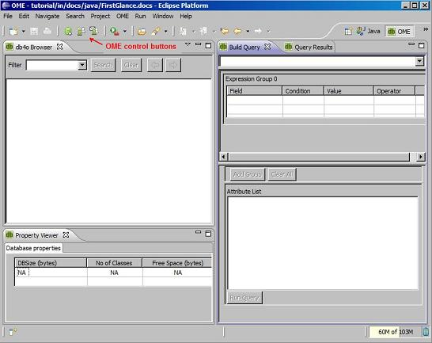
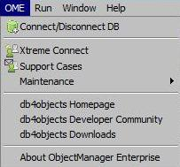
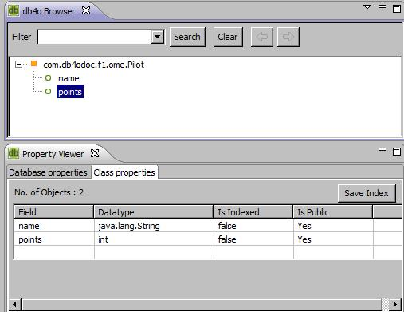
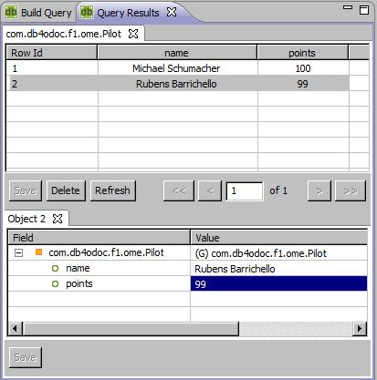
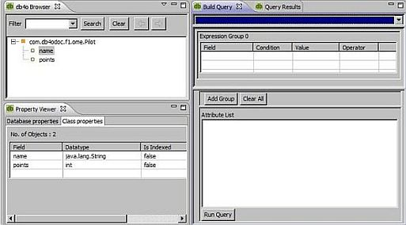
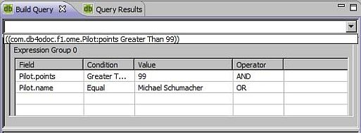

3. Object Manager Enterprise OverviewIf you did not install the Object Manager Enterprise yet, please, return to FirstGlance chapter and follow the installation instructions there. Once the Object Manager Enterprise (OME) is installed you can see it in Eclipse by selecting Window->Open Perspective->Other and choosing "OME". Typically, OME window should look similar to this:  In the OME perspective you can see: - OME menu:  - OME toolbar buttons to access the frequently used functionality fast - Db4o Browser: window displaying the contents of the open db4o database - Property Viewer: window displaying the properties of the open database or the properties of the selected database class - Build Query: windows allowing to build a query using drag&drop functionality - Query Results: window to browse the results of the query execution 3.1. Browsing the databaseIn the previous chapter we've learned how to create a new database and store objects in it. Let's create a new database and store some objects in it now:
Now we can see the resultant database in the Object Manager. Please select OME->Connect/Disconnect DB (or use a shortcut button from the toolbar menu) and browse to ome.db4o file in your user folder. (normally it is c:/Documents and Settings/[user name] on Windows XP/2000, c:/Users/[user name] on Windows Vista and /home/[user_name] on *nix systems). Once you've connected you will see a screen similar to this:  The db4o Browser window shows that there is 1 class in the database (Pilot), which contains 2 fields: name and points. In the Property Viewer you can see more information about the class fields. You can also change "Is indexed" field and add the index to the database by pressing "Save Index" button. The filter panel on the top of the view allows easier navigation through the database with lots of different classes. You can use wildcard searches and benefit from the search history to make the selection faster. 3.2. QueryingIt is easy to retrieve all of the Pilot instances from the database: just right-click the Pilot class in db4o Browser and select "View All Objects". The list of the Pilot objects will be shown in the Query Result view: You can see object details in the detailed view below. Try to change any values and use Save button to persist the changes to the database. You can also use Delete button to delete objects from the database. For the objects containing field objects you will be prompted to use cascade on delete. More complex queries can be done using Build Query view:  Drag "points" field from the db4oBrowser view into the Build Query view, set condition "Greater Than", put a value "99" and run the query. You can return to the Built Query tab and modify the query later on again. For example: add "AND" operator, drag "name" field and set the value to "Michael Schumacher". Re-run the query. When the new query is created, the previous query is stored and can be selected from the history drop-down:  More sophisticated queries can be build by joining grouped constraints using "Add Group" button. When you are done working with the database in OME, you can close the connection by using OME->Connect/Disconnect DB menu command or by using the equivalent button on the toolbar. In the next chapter we will explore more about db4o querying capabilities. You can continue using OME while going through the rest of this tutorial. If you are using the interactive version you will find the database in formula1.db4o file in your user folder. (normally it is c:/Documents and Settings/[user name] on Windows XP/2000, c:/Users/[user name] on Windows Vista and /home/[user_name] on *nix systems). Please, remember to disconnect OME before running any of the tutorial examples, as only one active connection is allowed to the database file. |